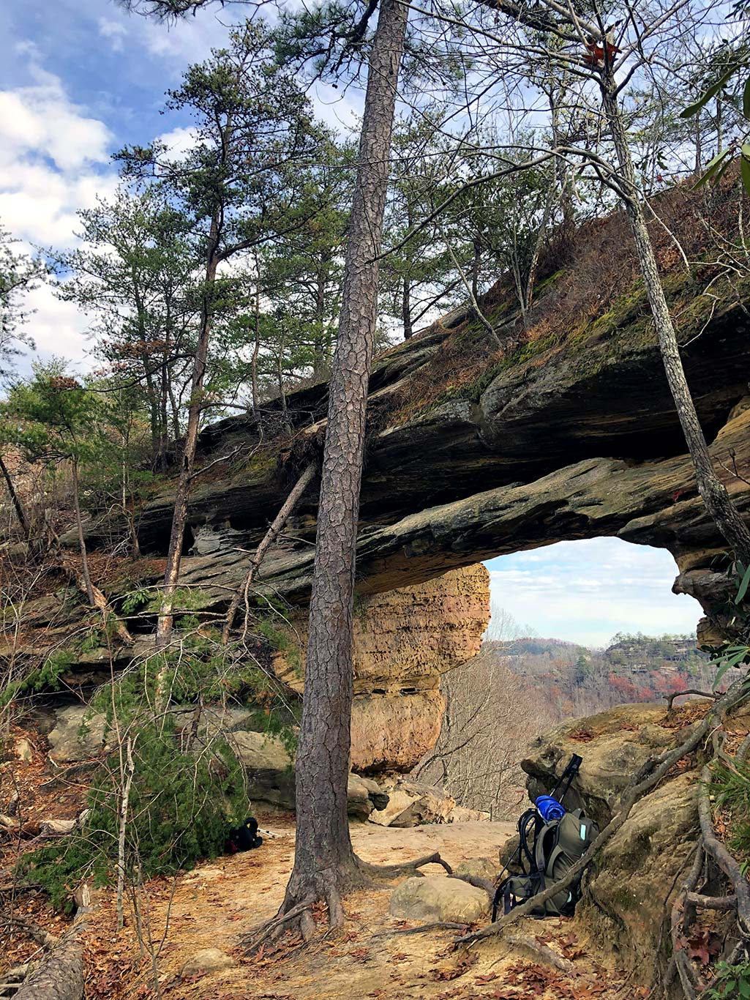
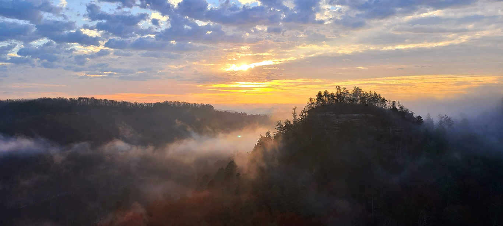
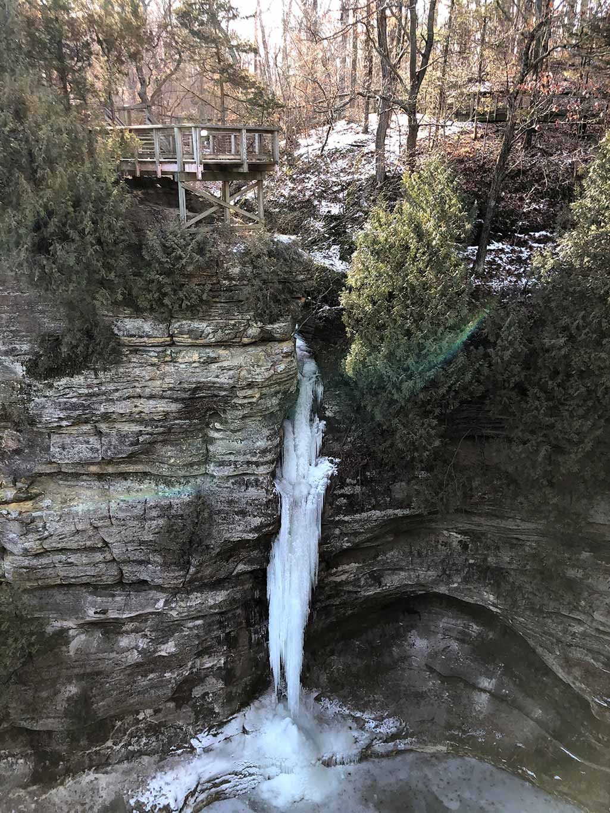
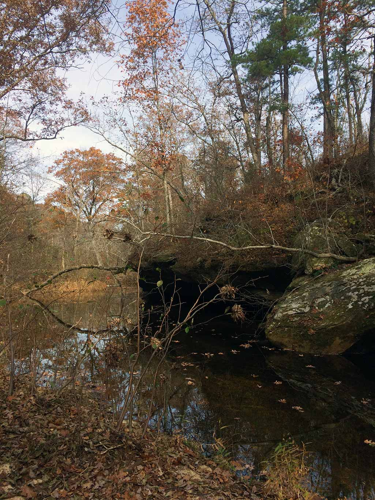
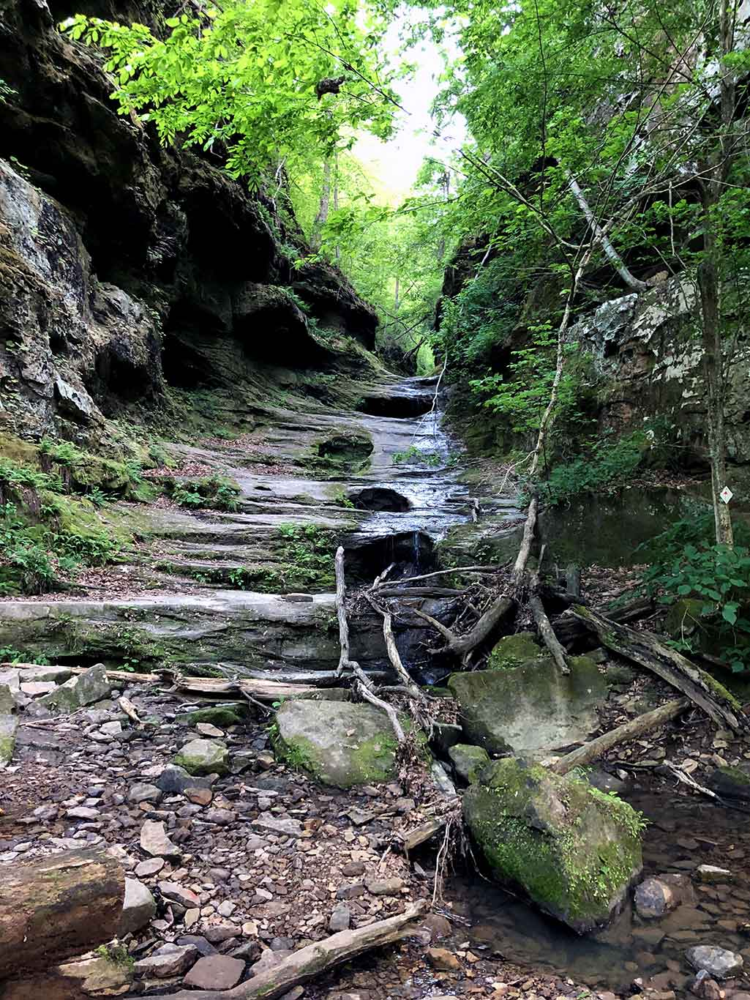
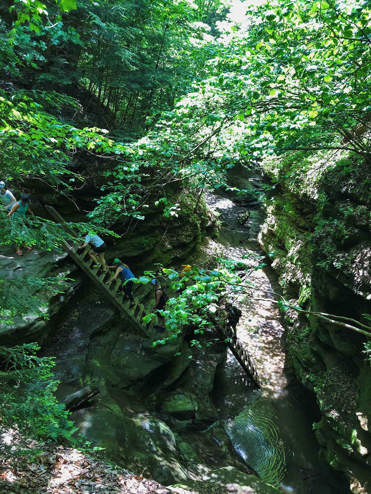
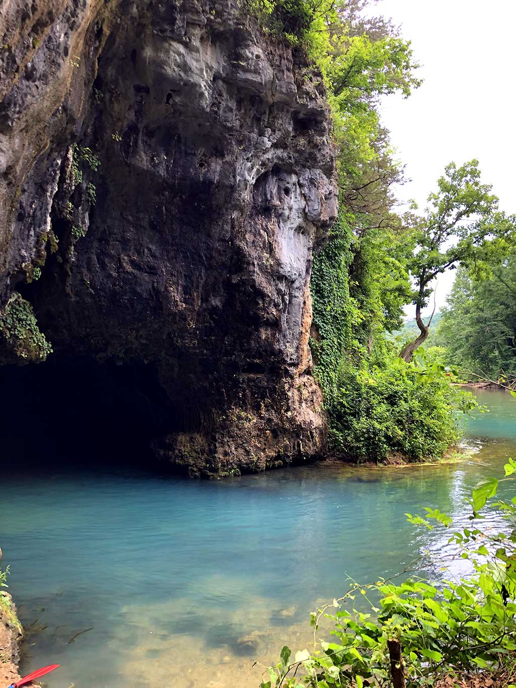

My favorite hobby for the last ten years has been hiking. What started off as short (< 3 miles long) treks into the woods with nothing more than my sunglasses, has grown into packing a bag full of supplies and spending all day in the woods. My next goal is to finish purchasing the necessary items required for a weekend in the woods, and then plan a short backpacking trip.
In the meantime, here is a list of my top 7 hikes within a few hours drive of St. Louis:
-
Auxier Ridge, Courthouse Rock & Double Arch Loop
Daniel Boone National Forest | Kentucky | 7.3 miles
This trail winds through the Red River Gorge Geological Area near Stanton, Kentucky. The trail begins along Auxier Ridge, a high, narrow ridge with beautiful views of the surrounding rock formations, including Double Arch, Haystack Rock, Courthouse Rock, and Raven Rock. The trail then continues on to a set of steep wooden stairs, descending to reach Courthouse Rock. After leaving Courthouse Rock, you continue through a wooded creek bottom until you make the ascent up to Double Arch. An overlook at Double Arch provides a breathtaking view. After leaving the overlook, the trail backtracks into the valley and then follows an old logging road until it reaches the parking lot.
-
Natural Bridge & Rock Garden Loop
Daniel Boone National Forest | Kentucky | 3.75 miles
The trail begins behind Hemlock Lodge within Natural Bridge State Resort Park. After climbing over 400 feet through a forest of hemlock, tulip tree, white pine, and rhododendron, the trail reaches a natural stone bridge. You can walk across the natural bridge and continue on the trail, taking in views of Lover's Leap and Battleship Rock. The trail then meanders down into the forest, around many sandstone boulders and ends back at the lodge.
-
Starved Rock Visitor's Center, St. Louis Canyon, & Wildcat Canyon
Starved Rock State Park | Illinois | 5.85 miles
Starved Rock State Park near Oglesby, Illinois has 13 miles of trails to choose from. This park is beautiful any time of year, but it's especially magical in winter when its many waterfalls become ice flows. For this hike, I began at the park's Visitor Center and trekked 1.5 miles west to St. Louis Canyon which features a spring-fed waterfall 80 feet high. From St. Louis Canyon, I headed back to the Visitors Center, and then continued in the opposite direction to see Wildcat Canyon. A dramatic 80 foot waterfall in the canyon can be viewed from wooden balconies overhead. After leaving Wildcat Canyon, I headed back to the Visitors Center to warm up and finish my hike.
-
Whispering Pines Trail - North Loop
Hawn State Park | Missouri | 6 miles
This is one of my all-time favorite trails within a couple hours of St. Louis. This state park lies along the northern edge of the Missouri Ozark Mountains, and features sandstone canyons and cliffs, clear, boulder-lined streams, and stands of shortleaf pine trees. I love this trail because it's the closest that a Missouri landscape can get to the feeling of alpine Colorado. The trail begins immediately after crossing a wooden footbridge adjacent to the parking lot, then climbs to the top of a bluff overlooking the campground. The trail meanders along the top of the moss-covered bluff, under stands of pine and oak trees, then descends to Pickle Creek where there is a lovely outcropping of boulders. The trail continues through large stands of pines, crossing back and forth over the creek. The trail finishes in a final ascent up some bluffs, then descends back to the trailhead with the footbridge.
-
Little Grand Canyon
Shawnee National Forest | Illinois | 3.9 miles
This trail near Murphysboro, Illinois begins at the top of a large canyon as an easy-going gravel path. The trail then descends into the canyon by following a steep, rocky creekbed. This part of the trail is very beautiful but can be dangerous and challenging. There are many areas along this section where the trail is composed of steps and hand-holds carved out of the stone. After reaching the bottom of the canyon, the trail winds along the base of 300-foot bluffs and through a bottomland forest before leading out of the canyon through a rocky creekbed.
-
5 Mile Challenge: Trails 1, 3, 4, 5, 9, & 10
Turkey Run State Park | Indiana | 5 miles
Turkey Run State Park has over 14 miles of hiking trails. On my visit, I chose this particular route, the 5 Mile Challenge. Starting at the suspension bridge spanning Sugar Creek, I then turned right onto trail 1, following parallel to Sugar Creek until I reached the wooden covered bridge, crossed it and continued on past the historic Lusk Home. Trail 4 then takes you past the Punch Bowl, followed by Camel's Back and the 140 Stes on Trail 10. Boulder Canyon, Falls Canyon, and the Ice Box complete the sights on this loop, which ends back at the suspension bridge. These trails contain so many unique canyons and rock formations, and ladders that are fun to use to climb down into the canyons. This is a place where one could spend all day exploring.
-
Cave Spring Loop & Devil's Well
Ozark National Secenic Riverways | Missouri | 5.6 miles
Cave Spring Loop Trail near Akers, Missouri, begins at Devil's Well. A stairwell leads you down where you can see a natural spring draining into a large sinkhole, dropping 100 feet down into the largest underground lake in Missouri. After viewing this unique location, the trail continues on through limestone glades, oak and pine-topped forest ridges, and bluff overlooks. The trail then descends towards the Current River, and a spur trail takes you to the mouth of a cave where you can explore a bit. The trail then returns to Devils' Well following a stream bed with views of both forest and meadows.